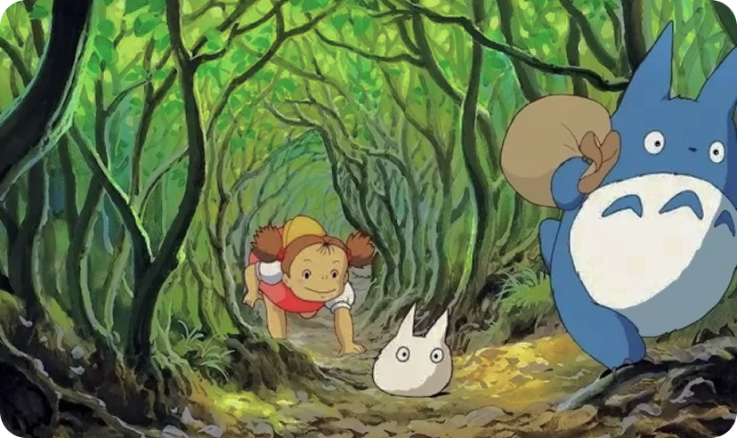

Film synopsis
Totoro "is an animated flm written and directed by Hayao Miyazaki, withvoice actors including Noriko Hidaka, Qianxia Sakamoto, Shigeki ltoi, SumeiShimamoto, and Ryo Kitabayashi. The hlm was released in Japan on April 16,1988, and the digitally restored version was released in Chinese Mainland onDecember 14, 2018
Film stills
Movie ratings
Film review
-
lt has a large, round body and soft fur. At night, it leads its children to play melodious music at the top of treebranches, when it rains, it wears a lotus leaf hat, and when it comes home, it summons its malestic Totoro bus
-
On the ourney of life, age cannot return, but one's state of mind can change. That's how a good movie works. l think Duo Duo Luo might climb into my dreams tonight.
Classic excerpt
-

I want to be friends with Duo Duo Luo. l imagine that after I meet him, hecan also give me a pack of seeds. l sow the seeds on the land at thedoor, but for some reason, the land doesn't grow anything.
-
What is that child like? She's my sister's follower. Wherever shefollows, Wherever she looks, she follows, Whatever my sister saysays
Role Introduction
Satsuki
Mei
Matsuzaka
Kanta
Kusakabe
Classic Lines
Everyone has a Totoro in their heart, and childhood will never disappearLove is the most beautiful possession
Let's laugh together and see if anything scary runs away
Don't be afraid of loneliness, because there must be someone in this worldwho is striving towards you